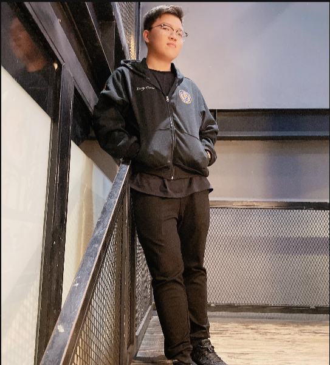
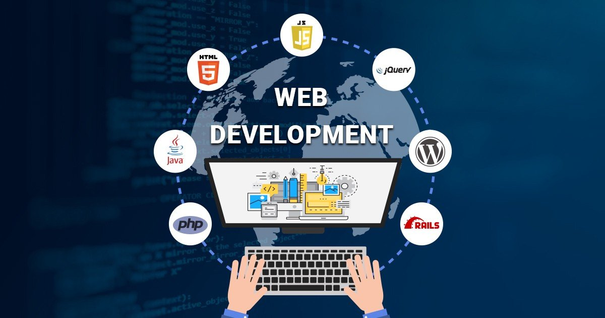

About me: A self-motivating freshman at RMIT University, majoring in Information Technology.
Passionate about webs and apps development along with the study of PC components.
Seeking a summer internship opportunity in the technology field that enables me to
contribute to the company and computing society as a whole by putting my existing
experience into practice as much as learning and growing as an individual.
I am an INTJ (Introverted - Intuitive - Thinking - Judging) person. My passion has always been about activities related to IT. I have had a great chance to learn computer programming for 2 years so I have some technical knowledge and experience. In spite of the introverted nature, I work with a team really well. I can contribute constructive feedback to the idea during every meeting and also listen carefully to feedback of others. I love to learn new things and to work with different people who have the same interests as me.
Team profile
Meet my team members
Vo Tuong Minh
RMIT ID: S3877562
Minh is an ENFP (Extraverted - Intuitive - Feeling - Prospective) person. He has a great knowledge in many different fields of IT. He is a hard-working person and always focuses on the process of the project. Minh also has a background in design so he creates a perfect logo for our team. He is like a leader to bring the members together.
Doan Yen Nhi
RMIT ID: S3880599
As an ISTP (Introverted - Observant - Thinking - Prospecting) person, Nhi is a great person to work with especially when it comes to writing tasks and planning the project. She has a really good writing skill and she is also the one who tracks and splits up the work for my team.

Nguyen Nhat Huy
RMIT ID: S3878500
Huy is an ESFP (Extraverted - Observant - Feeling - Prospective) person. He has previous experience with database development and he is really confident about it. He is a good puzzle piece for our technical team.
Do Duc Manh
RMIT ID: S3878480
Manh is an ISTJ (Introverted - Observant - Thinking - Judging) person. He does not have too much knowledge in the IT field. However, he is able to provide information and academic research for my team. Together with Nhi, they are a good research team for my project.
Tools
Git and Github
For assignment 2, I used Git repository to host my website. I did the work on Visual Studio Code, and I have then added, committed, and pushed the changes to the online repository to make changes to my website.
My project is about creating an application in three platforms which are website, Android app, and IOS app but mainly a smartphone app. The application is called “RMIT Mini World” (RMW). I came up with this name by the idea of creating an application like a small world of RMIT where all the information about services, needs, and troubleshooting is available. The main purpose of this application is to provide a simple, convenient tool for RMIT new students and visitors. This idea comes from the fact that I am also a new student at RMIT this semester. The design of the application will be a user-friendly interface with the main color themes are red and white like RMIT logo, so that people can access it comfortably.
Motivation
On account of the covid-19 situation, more and more students intend to transfer to RMIT to continue their study, and I am not an exception. New students, especially fresh-man, might be shocked by the university environment. Moreover, RMIT campus is spacious, and it is likely that new students will not be able to find study hall or cafeteria. Because of that reason, more than anyone else, I understand that having an application to guide helps new students a lot.
Description
RMIT Mini World is designed carefully in terms of data structure and user interface. At first, it will ask the user to log in as a current student or continue as a guest at the corner of the application. Depending on who the user is, the application will offer appropriate utilities. RMW contains six main modules as its core system. The first module is the administration module. This module is dedicated to developers of the application or the admin to control the server.
... It is the central controller of the application which stores all the database of the application. It not only uploads all the new information or updates datable on the site and authenticates user profiles, but also supervises the maintenance of the other modules. Move to the next part, it is the guest module. As the name suggests, the guest module handles all the guest-related operations in the RMIT. Guests can choose to visit many locations on campus such as learning halls, sport hall, restaurants, or outside basketball courts. The application connects with RMIT Ambassador so there will be a guide who helps guests to understand more about the facilities on campus. The next feature of RMW is for students obviously, especially new students, which is the student module. This module is designed specifically for helping students to access academic activities. The basic data of this module is linked with Canvas and it creates a pocket version of academic-related information for students. The main thing of this module is that it includes two small sections which are career and clubs. For the career section, the application will update the latest information about workshops, speeches of professional speakers, or how to get an internship at RMIT. The application also offers a booking session for students who need to talk person to person. On the other hand, the club section is about the activity events at RMIT. It provides users with all the dates of trial for clubs, meeting events, or tournaments. Another interesting feature of this application is the interest sharing section. In this section, students will fill a form asking about their interest. It could be anything like their major, hobbies, or favorite sports. The application collects all the data and with the matching algorithm, it suggests people with the same interest so they can get to know each other. Last but not least, it is the help module. It has a 24/7 contacting number, email, and a live bot to answer frequently asked questions. Students and guests can leave feedback at this section, and rate the application here. All the feedback and comments will be sent to the administration module in order to improve the quality of the application.
Tools and Technologies
The project requires several tools and technologies needed. For the website, the application needs to register domain name and also to buy the web hosting server. After finishing those parts, I choose Visual Studio Code as my coding environment and start to set up for the programming part. On the contrary, for an Android application, I use Android studio for the structure coding because it provides the most useful tools for creating an Android application such as XML Virtual Android that we can run the program on a virtual Android system phone. X-code is the IDE that I use for iOS application development because of features automatic completions and full syntax highlighting for Swift. Therefore, the project requires too many tools and technologies so it creates huge hurdles.
Skill Required
When knowing the tools and technologies that I use for my project, I have to focus on the skills required too. For databases, I need to create a local host for database information, and manage it with SQL. In terms of website development, my project requires people to work well with HTML, CSS, JS, Bootstrap, and jQuery. Those are the essential skills for a website developer. The project also requires people who understand about XML, Java for Android application development, and Swift for iOS. Therefore, this project will help me to develop my skills greatly, and I will also have experience and knowledge for my ideal job which is a full-stack developer. However, the project requires to know a lot of programming languages and those languages are not related to each other. Thus, it will be an obstacle in the programming part.
Outcome
The success of the project RMIT Mini World will affirm the purpose of its creation. The application will help students feel less confused when entering a new environment, as well as keep students up to date with upcoming events that they might be interested in. It will be a suitable and helpful application for guests and students, especially new students, to feel welcome to university. Furthermore, it is a very interesting project to work on to boost my ability and skill because of the complexity of the project.
IT Technologies
Database
As my application RMIT Mini World requires the server to store a huge amount of information and data, the database plays an important role in my project. Information management is still a growing industry due to the increasing need to save information of users. A database is a coordinated assortment of organized data or information, normally stored in a computer system. Database management system (DBMS) is a framework which will control all the databases. The data and DBMS together, alongside the applications that are connected with them, are referred to as an object of the database. The most common types of databases in operation today is the model of tables with rows and columns with values to make processing and data querying efficient. With data and DBMS, it can be easily accessed, retrieved, updated, created, and arranged.
... Most databases use structured query language, known as SQL, to compose and query data. The primary commercial DBMSs was created in the late 1960s as the decision supportive network. Specifically, it was designed for managers to input data to assist their decision-making process. It was created as Hierarchical and networks models at first. The first most important applications with databases were airline reservations systems, banking systems, and corporate records. With a strong development evolution of data, until now, almost all industries that need the management of user information must use the database system. Its first benefit is that it has the ability to store a large amount of information. This ability is essential for large companies, or hospitals, or schools with large numbers of customers, patients, and students because information about them must be handled very precisely. Database is also important to the banking industry because it allows users to share common information at the same time in different locations. The information is gained rapidly and effectively, which greatly facilities the workload and enables companies to have better client support service. Furthermore, for the information security, a database control can have several parts depending on the demand of users. By restricting access to certain parts of the data for specific users, the security of data will be guaranteed. Moreover, due to the digitization of information, databases become easier to maintain and more economical for companies for companies to carry out any maintenance. However, databases still have many limitations and still on the way to be upgraded in the near future. In the future, the database will extend to cloud databases. Compared to a few years ago, cloud databases can be scaled quickly and efficiently with low cost. Although scaling nodes was one of the hardest problems in database hosting, cloud databases can take care of these issues accurately. Moreover, data scientists expect the cloud database to resolve the broader range of works and provide capabilities that alternative database models have enabled. Not only table data, but it illustrates multiple data models such as graph, data virtualization, and distributed storage. Another development of databases in the future is real-time analytics. In the modern market where information is the most important asset of companies, consumers require to access their information instantaneously so analyzing data in real time creates a huge advantage. It helps to identify changes in the system immediately, to correct errors in operational processes in a short amount of time, and to link multiple sources of data and content together. Additionally, by cutting down the time to process, real-time analyzing data helps developers to have more time for other tasks and to reduce the mistakes probability, which will certainly increase the productivity of the company. Over the upcoming years, the development of databases will not only support the utilization of all data in real-time but will also motivate data analysts to develop more complex computations. Consequently, the necessity of future database platforms will lead to the appearance of new data technologies in predicting data flows.
The database is an industry that will evolve to make the operations of other industries easier. Databases help them to retain the information that they need throughout the day. It creates a clear potential impact in the workplace. Nowadays, many companies rely on strict recruitment, updating, and tracking information of customers. They use databases to save information, as well as to update all information of transactions on their system to manage. The workers will have to make sure they are familiar with obtaining information through the tool’s database. The most useful way to monitor transfers between parts of a database is to use databases related to the management system. Therefore, the long-distance database allows workers to enter new information, updating records, or delete old information from anywhere. Databases also affect the way companies work together. The price will be affected depending on whether the company or organization has a database or not. Databases are a factor that is created to help keep the business transparent and configurable. It can have several positive impacts on a business or jobs that need a database system. The main potential impacts of database focus on operational management, risk management, and efforts to tackle the activities. Therefore, the main reason why companies use databases is to reduce the wasted time significantly to make the job better by managing their time profitably. With this impact, databases will create an efficient data management system for companies to open a better working environment and save time. However, the development of databases will also lead to the higher requirements of employees. In modern life when technologies replace humans moderately, it might affect the replacement of jobs.
Last but not least, databases are not only important to businesses and companies, but also important to personal life. Whether I know a lot about databases or may not realize it, it still affects my daily life extensively. Databases appear in banks, restaurants, hospitals, or clothing stores, for example all use databases to keep track of customer, inventory, and accounting information. It allows us to store data quickly and accurately and is used in many aspects of my daily life. In my daily life, I can clearly see the usage of databases throughout many applications and devices that help me to improve and keep track of various aspects of my life. For instance, I use a fitness application to keep track my daily activities related to my health such as the time I ran, the calories I burned, the calories I took, or gallons of water I drank. The application collects all the data to create a database of my activity in order to give me feedback of my works, and also visualize with a bar chart or graphical analysis. Through this personal database, I am able to track my fitness progress easily and effectively. Furthermore, personal databases are not only used for fitness purposes, but also for maintaining and managing other aspects like finances of the family. There are applications of online banking involving the information about bank accounts and credit cards for me and my families to manage our finances strictly. The applications provide users with graphical display of spending habits, latest transactions, or interesting offers from the bank. It is very useful and convenient for users to control their financial issues. The same thing comes from other aspects of my life. In conclusion, personal databases provide a comfortable and productive scale to help not only me, but many of us improve different parts of our lives.

Web Development
The second area which helps my project RMIT Mini World is web development. The Invented on January 1, 1983, the Internet became popular less than a couple of decades ago. Web development is one of the most highly profitable industries in the modern time. This is the industry where it provides users websites with a large amount of information that users can access at any time. In addition to being the youngest and most productive industry, web development is additionally one of the quickest developing businesses since the late 1990s. As indicated by a US report, there were less than 1,000 web development organizations in the United States, nonetheless, this number expanded hugely to more than 30,000 companies in the United States alone. The main reason for the fast development of this industry is brought about by the interest to sell products and services online of large businesses.
... More and more businesses want to approach their customers with online services, promotions, or updates, so they invest a huge amount of money in the website industry. Furthermore, business managers want to automate the business workflow system so the idea of bringing it to the website server is a good solution. Web development is a term for the work engaged with building up a website for public internet (World Wide Web) or private network. It can include many small branches such as web design, web server, or e-commerce development. In any case, among web experts, “web development” alludes just to the non-design part of building a site which is the coding site. It can go from building up the least difficult page to the most difficult web-based internet applications. With the advancement of websites, for bigger associations and organizations, web improvement groups can incorporate several web designers. Each team will have a responsibility to do a small part of the main website. Web development can be cooperative works between numerous offices as opposed to a solitary branch of the organization. The amazing improvement of the web development industry is responsible for the expansion of interest from related or even non-related companies and businesses from any sizes that need to extend their reach for focused clients to sell their items or to advance their services successfully and productively. In the modern world, mostly every company and business has its own website to run and promote the business. The website helps businesses increase their exposure because it allows users to have a clear and sharp view of the business. Moreover, their own website opens the way for businesses reaching global audiences and further to increase their profit with foreign businesses. With their own website, each business can link and attach to their customers through the internet easily, whenever they want with the least expense. Therefore, websites help companies and businesses to decrease human error and lower the cost for human resources. With the technical expertise today, web development is one the road to a technologically transforming future. The website area will be involved with the Internet of Things, quantum computing and especially artificial intelligence in the near future. Artificial intelligence (AI) is the future of web space development. There are a couple of companies and institutions are already implementing AI to their platforms. The leading corporations like Google have used their AI technology in public to allow users to build their custom website by themselves. One of the latest features of AI is the grid. It helps the web development to simplify the process so businesses can focus on the content aspect. It will reduce the templates and coding part, users can create based on instructions and the lay-out design. Thus, AI technologies contribute deeply to the development of websites in the future.
More and more companies and businesses put money into upgrading their online market and the web development industry is benefitting greatly from this investment. With everyone depending on the internet for their access to necessities and supplies, especially due to COVID-19 pandemic, web development has become even more important to the success of any business. It demonstrates the business by informing people of products and services that the business offers and getting to know the customer information. Web development will have several clear potential impacts on the interests of the business. Online platforms allow users to access the website anytime. Customers will be able to have a contact form, a live chat, comment box, or emergency number which businesses will increase the chance to satisfy customers. The interacting and engaging conversation with customers by the time they need shows that the business is willing to respond to customer needs. Another potential impact of web development is that it can deliver selective contents to the customers. Web development helps control the quality of content and the user feedback and experience. Businesses will invest in the user interface to make it friendly, modern, and inviting to make the audience feel welcome. Through the interaction and feedback, website development improves the services to create appropriate marketing strategies. The organization which benefits the most from the proper web development or the fully optimized website is none other except for that business. Because of the importance of maintaining a good website, the human resources for system updates will become more necessary. Therefore, it will create jobs to keep the website on track to the demand of customers. However, it may also replace some positions of the company because of the help of machines.
In our daily life in general, or my life specifically, the internet is almost indispensable for anything. Whenever I have a question or need to find something, I look it up on the internet very first. Websites have some positive effects on my life. First of all, I can easily and efficiently communicate with my friends anywhere and anytime. I spend most of the time on social media to chat with my friends, and also to update the news on newsfeed instantly. The appearance of many online newspaper websites helps me keep track of news of many different topics daily and replace the old style newspaper. Moreover, we can plainly see the convenience of online in the COVID-19 situations. It helps not only me, but many international students to continue their study with online sessions. More and more activities could be transferred to website platforms to expand the flexibility and convenience of life. This effect also contributes to my parents for their work. They can work from home easily, joining the meeting from home, or having a discussion with their patient online. Another useful feature of the website is the online store. There are many online stores that offer almost everything such as Amazon so I can go shopping online simply. Moreover, most of the businesses want to promote and develop their online markets so they give out many promotions frequently. As a consequence, we can have a bright look at the importance of web development in the modern world, and also in the near future with the fast growth of this industry.
IT Work
For the IT Work section, I have a chance to interview Cao Hoang Tung - an IT professional from the AI field of Vin Technology company.
Linh (Interviewer): Can you tell me about your IT work as an AI professional at Vin?
Tung (IT Professional): As an AI professional at Vin, I have to read about AI project globally which has just realeased, and then implement it with my AI team.
Linh (Interviewer): What exactly do you do?
Tung (IT Professional): I am working at the "Text Normalization" project of the company and I am in the NLP (Nature Language Processing) team.
Linh (Interviewer): What is your daily work?
Tung (IT Professional): Everyday, I have to convert text to speech works. My task is to understand the meaning of the sentence so I can convert it in the right way for AI to understand.
Linh (Interviewer): Who or what types of people you interact at work?
Tung (IT Professional): So at my work, I usually will have to work with my NLP team. After finishing our tasks, we will have a meeting with the developers team and speech team. At the end of the working day, we will have to inform the project manager about our work progress.
Linh (Interviewer): What about your interactions with clients or investors?
Tung (IT Professional): Oh I usually do not need to interact with the clients or investors. The project manager is the one who will consult with clients. After the consultation, the project manager will assign the task for me.
Linh (Interviewer): Which aspects of your work do you find most challenging?
Tung (IT Professional): For me, I find that most of the tasks are challenging. It requires you to work very hard and focus on every details of the project.
Linh (Interviewer): Finally, do you have any words for the future of AI?
Tung (IT Professional): Artificial intelligence is a fastest growing industry in the modern world. The development of AI affects to many other IT fields. I guess AI will be the future of IT
From the interview, we can conclude some key points about the Artificial Intelligence (AI) developer position. According to Cao Hoang Tung, an AI professional, the main task of an AI developer is to update the latest AI news in the world. The AI developer has to read about the details of the new AI model which has just been released by large companies like Google. For instance, Google just launched an idea of a text-to-speech project, so he has to read about it carefully and implement the project with his team. Their task is text normalization which the output should be a beautiful format text which converted from a spoken form text. For each project in Vin company, it will be divided into several teams. For his team, there are three teams which are developers team, speech processing team, and nature language processing (NPL) team. Tung is in the NLP team and his daily task is to translate and understand the meaning of the text and convert it to the language for the machine. There will be a timeline and deadline for every project in the company. The project manager will be the one who will interact with the clients and investors. Project manager will aggregate the demand to assign the tasks to the team. After each working day, the team will have to report the progress of the work to the project manager to ensure the effectiveness of the project. According to him, the IT field is an aggressive field which requires hard-working, passionate and collaborative people. You might find every task of the job challenging but it is great when understanding deeply about the concept of your IT project.